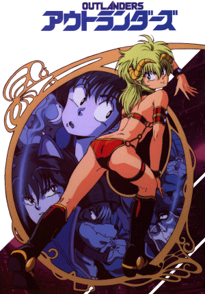

Outlanders

From the Anime Pocket Guide:
Cast:
Princess Kahm ............................... Fumi Hirano
Momo ........................................... Mika Doi
Nao ........................................ Akira Kamiya
Progresso ............................... Mikio Terashima
Description:
While invading the Sacred Planet (Earth), Princess Kahm destroys
an army unit, but is unexpectedly defeated by a photographer
named Tetsuya who's covering the invasion. Kahm promptly does
three things: kisses him, kidnaps him and plans to marry him.
On the way back, she finds that many are opposed to the marriage
(which, as a side benefit, is supposed to save Earth) including
her father. Tetsuya rescues her, and they try to elope. This
OAV attempted to cram the entire manga into 1 hour and comes
out confused...but it's still fun, nevertheless.
Other Resources
Anime Video Game Resource Center © 1998 by Luis A. Cruz